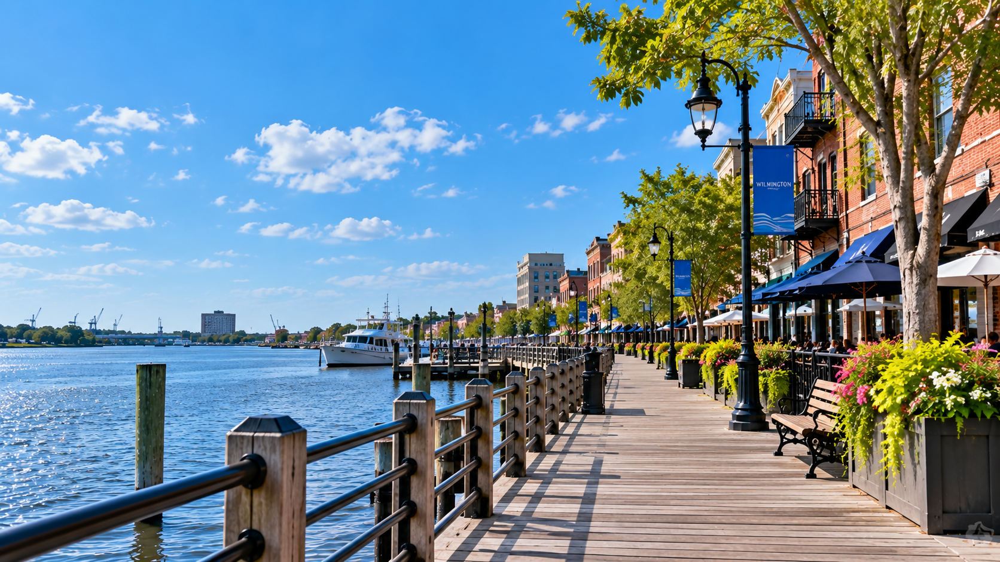
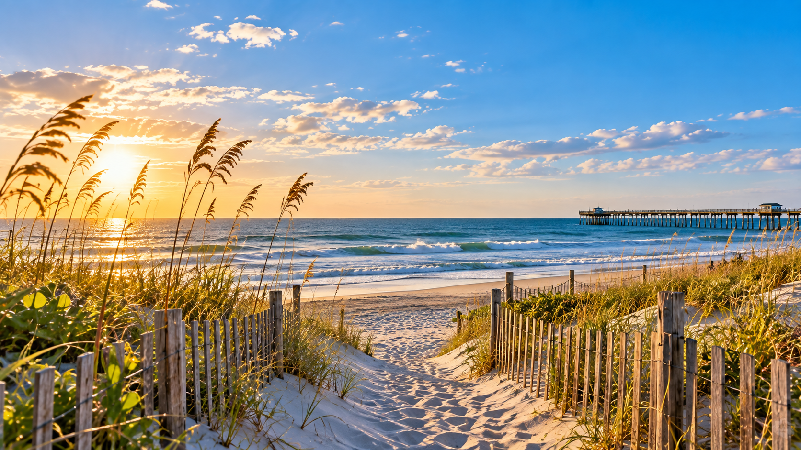
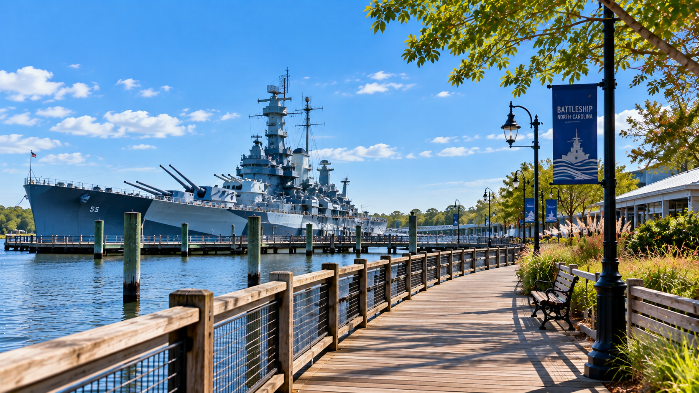

Explore Wilmington
From downtown to the coast
Historic streets, waterfront views, gardens, beaches, and local landmarks make Wilmington easy to explore over a weekend.

Downtown Wilmington
Riverwalk & Historic Downtown
Stretching along the Cape Fear River, Wilmington's Riverwalk is a great place to begin exploring downtown. Walk along the waterfront, take in the river views, and explore the shops, restaurants, and historic streets nearby.
Image by OpenAI - ChatGPT

Gardens
Airlie Gardens
Airlie Gardens offers a quieter side of Wilmington with walking paths, seasonal flowers, large live oaks, and landscaped gardens. It's an easy place to slow down and spend a few hours outdoors during a weekend visit.
Photo by Avi Waxman - Unsplash

The Coast
Wrightsville Beach
Just a short drive from downtown Wilmington, Wrightsville Beach offers wide stretches of sand and views of the Atlantic Ocean. Visitors can spend part of the day walking the beach, enjoying the water, or simply relaxing along the coast.
Image by OpenAI - ChatGPT

History
Battleship North Carolina
Across the Cape Fear River from downtown, Battleship North Carolina gives visitors a chance to explore a World War II battleship. Visitors can walk through areas of the ship while learning about its history and the sailors who served aboard.
Image by OpenAI - ChatGPT